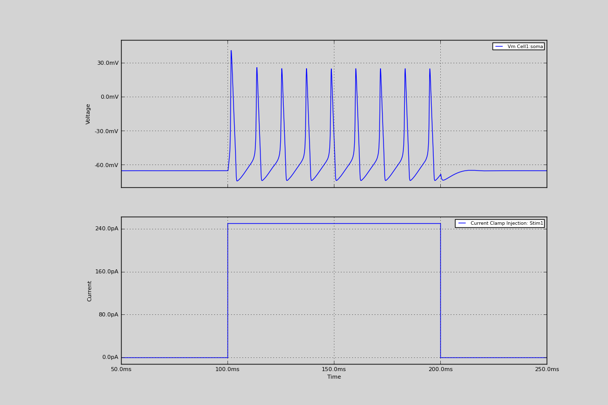

8. Hodgkin-Huxley ‘52 neuron simulation
Hodgkin-Huxley ‘52 neuron simulation.
A simulation of the HodgkinHuxley52 neuron. We create 3 channels, Lk, Na, and K channels and apply them over the neuron. The morphforge backend takes care of building/compiling .mod-files from these, and runs the simulation. Note that the neurons reseting potentials have been shifted from 0mV to -65mV.
Code
from morphforge.stdimports import *
from morphforgecontrib.simulation.channels.hh_style.core.mmleak import StdChlLeak
from morphforgecontrib.simulation.channels.hh_style.core.mmalphabeta import StdChlAlphaBeta
# Create the environment:
env = NEURONEnvironment()
# Create the simulation:
sim = env.Simulation()
# Create a cell:
morphDict1 = {'root': {'length': 20, 'diam': 20, 'id':'soma'} }
m1 = MorphologyTree.fromDictionary(morphDict1)
cell = sim.create_cell(name="Cell1", morphology=m1)
lk_chl = env.Channel(
StdChlLeak,
name="LkChl",
conductance=qty("0.3:mS/cm2"),
reversalpotential=qty("-54.3:mV"),
)
na_state_vars = { "m": {
"alpha":[-4.00,-0.10,-1.00,40.00,-10.00],
"beta": [4.00, 0.00, 0.00,65.00, 18.00]},
"h": {
"alpha":[0.07,0.00,0.00,65.00,20.00] ,
"beta": [1.00,0.00,1.00,35.00,-10.00]}
}
na_chl = env.Channel(
StdChlAlphaBeta,
name="NaChl", ion="na",
equation="m*m*m*h",
conductance=qty("120:mS/cm2"),
reversalpotential=qty("50:mV"),
statevars=na_state_vars,
)
k_state_vars = { "n": {
"alpha":[-0.55,-0.01,-1.0,55.0,-10.0],
"beta": [0.125,0,0,65,80]},
}
k_chl = env.Channel(
StdChlAlphaBeta,
name="KChl", ion="k",
equation="n*n*n*n",
conductance=qty("36:mS/cm2"),
reversalpotential=qty("-77:mV"),
statevars=k_state_vars,
)
# Apply the channels uniformly over the cell
cell.apply_channel( lk_chl)
cell.apply_channel( na_chl)
cell.apply_channel( k_chl)
cell.set_passive( PassiveProperty.SpecificCapacitance, qty('1.0:uF/cm2'))
# Create the stimulus and record the injected current:
cc = sim.create_currentclamp(name="Stim1", amp=qty("250:pA"), dur=qty("100:ms"), delay=qty("100:ms"), cell_location=cell.soma)
sim.record(cc, what=StandardTags.Current)
# Define what to record:
sim.record(cell, what=StandardTags.Voltage, name="SomaVoltage", cell_location = cell.soma)
# run the simulation
results = sim.run()
# Display the results:
TagViewer([results], timerange=(50, 250)*units.ms, show=True)
Figures

Download Figure
{kind=link}
Output
No handlers could be found for logger "neurounits"
2013-10-19 15:40:04,135 - morphforge.core.logmgr - INFO - Logger Started OK
2013-10-19 15:40:04,136 - DISABLEDLOGGING - INFO - _run_spawn() [Pickling Sim]
No handlers could be found for logger "neurounits"
2013-10-19 15:40:05,722 - morphforge.core.logmgr - INFO - Logger Started OK
2013-10-19 15:40:05,723 - DISABLEDLOGGING - INFO - Ensuring Modfile is built
NEURON -- Release 7.1 (359:7f113b76a94b) 2009-10-26
Duke, Yale, and the BlueBrain Project -- Copyright 1984-2008
See http://www.neuron.yale.edu/credits.html
Openning ScriptFlags
/auto/homes/mh735/hw/NeuroUnits/ext_deps
Loading StdLib file: /auto/homes/mh735/hw/NeuroUnits/src/neurounits/../stdlib/stdlib.eqn
Loading Bundle from: /local/scratch/mh735/tmp/morphforge/tmp/simulationresults/22/2266e45c13ed776c6210abfa8f9f2e85.bundle (11k) : 0.789 seconds
set(['conductance', 'reversalpotential'])
__dict__ {'mm_neuronNumber': None, 'cachedNeuronSuffix': None, 'reversalpotential': array(-54.3) * mV, '_name': 'LkChl', '_simulation': None, 'conductance': array(3.0) * s**3*A**2/(kg*m**4)}
loading membrane mechanisms from /local/scratch/mh735/tmp/morphforge/tmp/modout/mod_c3d70787badff74ee1f3c8e70b69657d.so
loading membrane mechanisms from /local/scratch/mh735/tmp/morphforge/tmp/modout/mod_61e57096a9a19de2c18f88c4810c5366.so
loading membrane mechanisms from /local/scratch/mh735/tmp/morphforge/tmp/modout/mod_2febb726c650a7f808b3f65da5a1c322.so
1
1
0.01
0
1
50000
1
50000
1
Running Simulation
Time for Extracting Data: (2 records) 0.00106120109558
Running simulation : 0.126 seconds
Post-processing : 0.005 seconds
Entire load-run-save time : 0.920 seconds
Suceeded
Openning ScriptFlags
/auto/homes/mh735/hw/NeuroUnits/ext_deps
Loading StdLib file: /auto/homes/mh735/hw/NeuroUnits/src/neurounits/../stdlib/stdlib.eqn
PlotMnager:Saving _output/figures/singlecell_simulation020/{png,svg}/fig000_Autosave_figure_1.{png,svg}